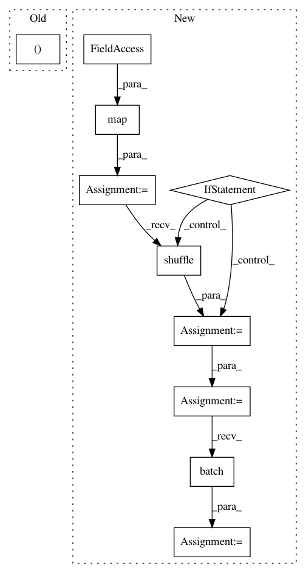

c8ce0dd677b35b9c56b3c03aad217ce56b55e16f,census/customestimator/trainer/model.py,,input_fn,#Any#Any#Any#Any#Any#,297
Before Change
filenames, num_epochs=num_epochs, shuffle=shuffle)
reader = tf.TextLineReader(skip_header_lines=skip_header_lines)
_, rows = reader.read_up_to(filename_queue, num_records=batch_size)
// Parse the CSV File
features = parse_csv(rows)
After Change
Tensors, and indices is a single Tensor of label indices.
dataset = tf.data.TextLineDataset(filenames).skip(skip_header_lines).map(parse_csv)
if shuffle:
dataset = dataset.shuffle(buffer_size=batch_size * 10)
dataset = dataset.repeat(num_epochs)
dataset = dataset.batch(batch_size)
iterator = dataset.make_one_shot_iterator()
features = iterator.get_next()
return features, features.pop(LABEL_COLUMN)
In pattern: SUPERPATTERN
Frequency: 3
Non-data size: 10
Instances
Project Name: GoogleCloudPlatform/cloudml-samples
Commit Name: c8ce0dd677b35b9c56b3c03aad217ce56b55e16f
Time: 2017-12-18
Author: puneith@google.com
File Name: census/customestimator/trainer/model.py
Class Name:
Method Name: input_fn
Project Name: tensorflow/models
Commit Name: 54a5a577d06acce4d13aa8d564c85e8d57ac00e7
Time: 2018-09-29
Author: joelshor@google.com
File Name: research/gan/cyclegan/data_provider.py
Class Name:
Method Name: _provide_custom_dataset
Project Name: GoogleCloudPlatform/cloudml-samples
Commit Name: 8e57685f2815b20bb27e88cad056f61939b7e86e
Time: 2017-12-18
Author: puneith@google.com
File Name: census/tensorflowcore/trainer/model.py
Class Name:
Method Name: input_fn